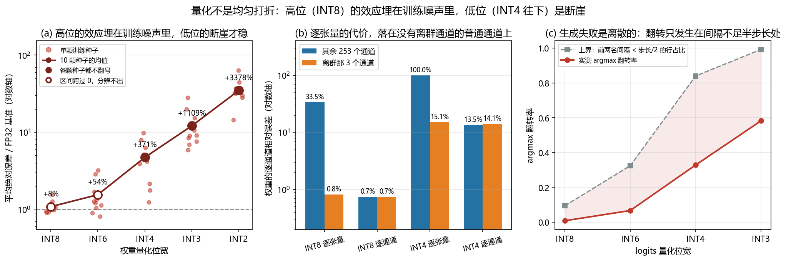

边缘 VLM 部署（Edge Deployment of VLMs）¶
预计阅读：18 分钟 | 前置知识：模型压缩基础、嵌入式系统基础、VLM 架构
1. 为什么需要边缘部署？¶
VLM 通常包含数十亿参数，需要强大的 GPU 进行推理。然而，无人机等边缘设备面临严格的资源约束：
| 约束维度 | 云端服务器 | 无人机边缘设备 | 差距 |
|---|---|---|---|
| 计算能力 | ~312 TFLOPS (A100, FP16 稠密) | 40–100 TOPS (Jetson Orin Nano/NX, INT8 稀疏) | 约 3–8x |
| 内存容量 | 80GB+ | 4-32GB | 5-20x |
| 功耗 | 300W+ | 5-30W | 10-60x |
| 延迟 | 100-500ms (网络) | 10-50ms (本地) | 低 |
| 带宽 | 充分 | 有限/不稳定 | 限制 |
口径说明：算力一行两侧单位不同——云侧是 FP16 稠密 TFLOPS，边侧是 INT8 稀疏 TOPS（NVIDIA 对 Jetson Orin 的官方口径）。INT8 相对 FP16 大约有 2 倍吞吐，稀疏又再翻一倍，所以「约 3–8x」只是个量级，不要当精确比值用。跨口径直接比大小是这一行最容易出错的地方。
边缘部署 VLM 的核心动机：
- 低延迟：实时应用（避障、跟踪）需要毫秒级响应
- 离线能力：无人机可能在无网络覆盖区域作业
- 隐私保护：敏感数据（军事、安防）不应上传云端
- 带宽节省：高清视频流上传消耗大量带宽
graph LR
subgraph 云端部署
A[无人机] -->|视频流| B[云端服务器]
B -->|推理结果| A
end
subgraph 边缘部署
C[无人机] --> D[机载推理]
D --> C
end
style A fill:#ffcdd2
style B fill:#ffcdd2
style C fill:#c8e6c9
style D fill:#c8e6c92. 模型压缩技术全景¶
mindmap
root((模型压缩))
剪枝
非结构化剪枝
结构化剪枝
半结构化剪枝
量化
训练后量化 PTQ
量化感知训练 QAT
混合精度量化
知识蒸馏
特征蒸馏
Logit蒸馏
关系蒸馏
架构设计
轻量化架构
高效注意力
动态推理3. 核心技术详解¶
3.1 模型剪枝（Pruning）¶
剪枝通过移除模型中不重要的参数或结构来减小模型体积和计算量。
剪枝策略对比¶
| 策略 | 描述 | 压缩率 | 精度损失 | 硬件友好 |
|---|---|---|---|---|
| 非结构化剪枝 | 移除单个权重 | 高 (90%+) | 低 | 差 |
| 结构化剪枝 | 移除整个通道/层 | 中 (50-80%) | 中 | 好 |
| 半结构化剪枝 | N:M 稀疏模式 | 中 (50%) | 低 | 中 |
VLM 剪枝的特殊考虑¶
VLM 包含视觉编码器和语言模型两个主要组件，剪枝策略需要分别考虑：
| 组件 | 推荐策略 | 原因 |
|---|---|---|
| 视觉编码器 | 结构化剪枝 | 视觉特征冗余度高 |
| 语言模型 | 半结构化剪枝 | 保持生成质量 |
| 连接器 | 轻量化 | 参数量小，整体替换 |
3.2 模型量化（Quantization）¶
量化将模型权重和激活从高精度（FP32）转换为低精度（INT8、INT4）表示。
量化方法对比¶
| 方法 | 描述 | 精度影响 | 训练需求 | 工具支持 |
|---|---|---|---|---|
| PTQ (训练后量化) | 直接量化已训练模型 | 中 | 无需训练 | TensorRT, ONNX |
| QAT (量化感知训练) | 训练时模拟量化 | 低 | 需要训练 | PyTorch, TF |
| 混合精度 | 不同层使用不同精度 | 低 | 可选 | 自定义 |
量化精度-性能权衡¶
| 精度 | 模型大小 | 推理速度 | 精度保持 | 适用场景 |
|---|---|---|---|---|
| FP32 | 1x | 1x | 100% | 训练/调试 |
| FP16 | 0.5x | 2x | 99.5% | 云端推理 |
| INT8 | 0.25x | 3-4x | 97-99% | 边缘推理 |
| INT4 | 0.125x | 5-8x | 93-97% | 极端压缩 |
注意：前两列（模型大小、推理速度）是确定的算术与硬件事实——模型大小 = 位宽比，推理速度随硬件与算子支持变化。后两列（精度保持）是经验区间，没有统一来源，不应作为选型依据。本卷第 9 节的动手验证正是要说明这一点：在可分辨的任务上，「精度保持 97-99%」这类数字根本量不出来，不同任务、不同标定集能差出十几个点。要判断某一档能不能用，只能拿你自己的任务集测——这张表能告诉你的只有「INT8 的权重占地是 FP16 的一半」这种算术。
VLM 量化的挑战¶
- 多模态对齐：视觉和语言特征的数值范围差异大
- 注意力机制：Softmax 对量化精度敏感
- 生成质量：语言模型的自回归生成对误差累积敏感
3.3 知识蒸馏（Knowledge Distillation）¶
知识蒸馏通过训练小模型（Student）模仿大模型（Teacher）的行为来实现模型压缩。
蒸馏策略¶
graph TB
subgraph Teacher模型
A1[视觉编码器]
A2[语言模型]
A3[中间特征]
end
subgraph Student模型
B1[轻量视觉编码器]
B2[轻量语言模型]
B3[中间特征]
end
A1 -.->|特征蒸馏| B1
A2 -.->|Logit蒸馏| B2
A3 -.->|关系蒸馏| B3
style A1 fill:#ffcdd2
style A2 fill:#ffcdd2
style B1 fill:#c8e6c9
style B2 fill:#c8e6c9| 蒸馏类型 | 描述 | 优势 | 局限 |
|---|---|---|---|
| Logit 蒸馏 | 匹配输出概率分布 | 简单有效 | 信息损失大 |
| 特征蒸馏 | 匹配中间层特征 | 信息保留多 | 需要设计对齐 |
| 关系蒸馏 | 匹配样本间关系 | 泛化性好 | 计算开销大 |
4. 核心工作详解¶
4.1 Edge-Optimized BLIP-2 — 外挂检测器的无人机视频理解平台¶
论文: Edge-Optimized Multimodal Learning for UAV Video Understanding via BLIP-2（DMBD 2025） arXiv: 2601.08408
核心做法¶
这篇论文不做架构替换。它保留原版 BLIP-2（冻结视觉编码器 + Q-Former + LLM），在外面挂两个检测器（YOLO-World 与 YOLOv8-Seg）来补上无人机视频里小目标与实例分割的短板。
论文原句："a lightweight multimodal task platform based on BLIP-2, integrated with YOLO-World and YOLOv8-Seg models"。
graph LR
A[无人机视频流] --> B[K-Means 关键帧采样]
B --> C[BLIP-2<br/>冻结 ViT + Q-Former + LLM]
B --> D[YOLO-World<br/>开放词汇检测]
B --> E[YOLOv8-Seg<br/>实例分割]
C --> F[统一 prompt 优化]
D --> F
E --> F
F --> G[描述 / 问答 / 检测结果]BLIP-2 基线的真实规模¶
若要对照原版 BLIP-2 的体量，应按 BLIP-2 原文（arXiv:2301.12597）表 2：ViT-g + FlanT5-XL 配置总参数约 4.1B，其中 Q-Former 188M、FlanT5-XL 约 3B，而 ViT-g/14 由差值反推约 1.0B。
论文自报的开销¶
论文的核心结论之一恰恰是没省下来：它自己报的峰值 GPU 显存约 17 GB（Table 1 的 GPU(GB) 列在 14.68–15.93 之间）。
论文原句："maintaining peak GPU memory usage at approximately 17GB"。
论文只有两张表——Table 1 是「载入 / 速度 / 显存 / GPU 占用」的消融，Table 2 是 LVIS minival 上的零样本检测 AP。
4.2 AVION — 遥感视觉-语言模型的提示微调式蒸馏¶
论文: AVION: Aerial Vision-Language Instruction from Offline Teacher to Prompt-Tuned Network (CVPR 2026) arXiv: 2603.12659
核心思路¶
AVION 的框架确实是「冻结的大 teacher → 轻量 student」，但「轻量」指的不是换了个小模型，而是只训练提示参数：teacher 与 student 都是 GeoRSCLIP，学生一侧只加可学习的 deep prompt（约 98K 参数，不到骨干的 1%）。
论文原句："the student backbone is GeoRSCLIP(ViT-B/32) and the frozen teacher is GeoRSCLIP(ViT-H/14)"、"A frozen large teacher model is employed to distill knowledge into a lightweight student model that is later used for inference."
| 特性 | 描述 |
|---|---|
| Teacher | GeoRSCLIP (ViT-H/14)，冻结 |
| Student | GeoRSCLIP (ViT-B/32) + 可学习 deep prompt（约 98K 参数，<1% backbone） |
| 蒸馏策略 | LLM 生成文本原型 + 选择性原型聚合 + 三方面对齐（Tri-Aspect Alignment） |
| 适用任务 | 遥感分类与跨模态检索的 PEFT 适配 |
蒸馏架构¶
graph TB
subgraph Teacher["Teacher: GeoRSCLIP (ViT-H/14), 冻结"]
T1[视觉编码器]
T2[LLM 生成的文本原型]
end
subgraph Student["Student: GeoRSCLIP (ViT-B/32) + deep prompt"]
S1[视觉编码器]
S2[可学习 prompt]
S3[选择性原型聚合]
end
T1 -.->|图像侧对齐| S1
T2 -.->|文本侧对齐| S2
T2 -.->|logit 蒸馏| S3损失权重的真实设置¶
论文的损失权重是固定常数，不是学出来的：λ_img = 0.5、λ_text = 0.5、λ_logit = 1.0，蒸馏温度 τ 固定为 2。
论文原句："we set the final weights to λ_img = 0.5, λ_text = 0.5, and λ_logit = 1.0 ... The distillation temperature τ is fixed at 2"。
论文报告的真实增幅¶
这篇的提升落在分类与检索指标上，量级是「几个百分点」，不是两位数百分比：
| 数据集 | 指标 | 增幅 |
|---|---|---|
| RSITMD | mR | +1.11 pp |
| RSICD | mR | +0.93 pp |
| RESISC-45 | 准确率 | +5.46% / +2.88% |
论文原句："AVION improves mR by +1.11 pp (RSITMD) and +0.93 pp (RSICD)"。
4.3 CARLA-Air — 仿真测试平台¶
论文: CARLA-Air: Fly Drones Inside a CARLA World — A Unified Infrastructure for Air-Ground Embodied Intelligence (2026) arXiv: 2603.28032
核心问题¶
在真实无人机上测试 VLM 部署方案成本高、风险大。CARLA-Air 把 CARLA 的高保真城市驾驶仿真与物理精确的多旋翼飞行统一到同一个世界里，为 air-ground 具身智能提供一套仿真基础设施。
论文原句："unifies high-fidelity urban driving and physics-accurate multirotor flight"；覆盖的工作负载是 "cooperation, embodied navigation and vision-language action, multi-modal perception and dataset construction"。
平台架构¶
graph TB
subgraph CARLA-Air平台
A[场景生成器]
B[物理仿真引擎]
C[传感器模拟器]
D[VLM推理引擎]
E[评估系统]
end
subgraph 场景库
F[城市场景]
G[乡村场景]
H[工业场景]
I[灾害场景]
end
subgraph 传感器
J[RGB相机]
K[深度相机]
L[激光雷达]
M[IMU/GPS]
end
A --> B
B --> C
C --> D
D --> E
F --> A
G --> A
H --> A
I --> A
J --> C
K --> C
L --> C
M --> C论文实测的三项¶
CARLA-Air 的性能评估只有三项：
| 实验 | 内容 |
|---|---|
| 帧率与资源伸缩 | 负载上升时帧率与计算资源如何变化 |
| 持续运行下的显存稳定性 | 长时间运行（3 小时）无显存泄漏 |
| 通信延迟 | 仿真与外部模块之间的通信开销 |
论文原句："three experiments: frame-rate and resource scaling ..., memory stability under sustained operation ..., and communication latency"。
关于 Sim-to-Real¶
5. 部署架构设计¶
5.1 纯边缘部署¶
graph TB
subgraph 无人机端
A[传感器输入] --> B[预处理]
B --> C[VLM 推理]
C --> D[后处理]
D --> E[控制输出]
end
style C fill:#c8e6c9适用场景：无网络环境、低延迟需求、隐私敏感 挑战：计算资源受限、模型大小受限
5.2 云边协同部署¶
graph TB
subgraph 无人机端
A[传感器输入] --> B[轻量预处理]
B --> C[边缘 VLM<br/>轻量推理]
C --> D{置信度判断}
D -->|高置信| E[本地决策]
D -->|低置信| F[上传云端]
end
subgraph 云端
G[云端 VLM<br/>完整推理]
G --> H[结果回传]
end
F --> G
H --> E
style C fill:#c8e6c9
style G fill:#bbdefb适用场景：有网络环境、复杂任务、精度优先 优势：平衡延迟和精度
5.3 分层部署¶
graph TB
subgraph 第一层: 实时层
A[传感器输入] --> B[轻量模型<br/>避障/跟踪]
B --> C[实时控制]
end
subgraph 第二层: 理解层
D[关键帧] --> E[中等模型<br/>场景理解]
E --> F[任务调整]
end
subgraph 第三层: 规划层
G[汇总信息] --> H[云端大模型<br/>高层规划]
H --> I[策略更新]
end
B --> D
E --> G
style B fill:#c8e6c9
style E fill:#fff9c4
style H fill:#bbdefb适用场景：复杂任务、多时间尺度需求 优势：不同层次使用不同规模的模型
6. 技术选型指南¶
6.1 硬件平台对比¶
| 平台 | 算力（INT8） | 内存 | 功耗 | 价格 | 适用场景 |
|---|---|---|---|---|---|
| Jetson Orin NX 16GB | 100 TOPS | 16GB | 10–25W | $599（模组首发价） | 高性能边缘推理 |
| Jetson Orin Nano 8GB | 40 TOPS | 8GB | 15W | $249 | 中等性能 |
| Jetson Nano | 472 GFLOPS（FP16） | 4GB | 5–10W | $99（2019 发布价，已停产） | 入门级 |
| Raspberry Pi 5 | 无 NPU；加 AI HAT+ 后 13 / 26 / 40 TOPS | 8GB | ~12W | $80（主板） | 轻量推理 |
| 手机 NPU | 10–30 TOPS | 8–16GB | ~5W | — | 移动端 |
6.2 压缩技术选型¶
| 需求 | 推荐技术 | 预期效果 |
|---|---|---|
| 快速部署 | PTQ (INT8) | 2-3x 加速，精度损失小 |
| 极致压缩 | INT4 量化 + 剪枝 | 8-10x 压缩，需要验证精度 |
| 精度优先 | 知识蒸馏 | 3-5x 压缩，精度保持好 |
| 灵活部署 | 混合精度 | 根据层重要性分配精度 |
这些「倍数」只是量级，不要当承诺： - 压缩倍数（INT4 + 剪枝的 8-10x、蒸馏的 3-5x）是参数量比，可以精确预期——但它和「省了多少延迟」不是一回事，权重变小不会让激活和运行时开销跟着变小（见第 10 节）。 - 加速倍数（PTQ 的 2-3x）依赖硬件与算子支持：同一份 INT8 权重在没有对应 Tensor Core 路径的板子上可能一点不提速，甚至更慢（需要插入反量化）。 - 「精度损失小」「精度保持好」这两句在本卷被自己的实验否掉了：第 9 节点明在能分辨小退化的任务上，同一个 INT8 档 10 颗种子给出的退化从 −9.1% 摆到 +56.4%，区间跨过 0。选型时能信的是第 1 条，后两条只能拿你自己的任务集测。
6.3 软件工具链¶
| 工具 | 用途 | 特点 |
|---|---|---|
| TensorRT | NVIDIA GPU 推理优化 | 最佳 Jetson 支持 |
| ONNX Runtime | 跨平台推理 | 平台无关 |
| OpenVINO | Intel 设备优化 | Intel 硬件最佳 |
| TFLite | 移动端部署 | 手机端成熟 |
| MLC-LLM | LLM 边缘部署 | 专门优化 LLM |
7. 实践建议¶
7.1 部署流程¶
graph TB
A[选择目标平台] --> B[评估资源约束]
B --> C[选择压缩技术]
C --> D[模型压缩与量化]
D --> E[精度验证]
E --> F{满足要求?}
F -->|否| G[调整压缩策略]
G --> C
F -->|是| H[性能优化]
H --> I[集成测试]
I --> J[部署上线]
style E fill:#fff9c4
style H fill:#c8e6c97.2 常见问题与解决方案¶
| 问题 | 原因 | 解决方案 |
|---|---|---|
| 精度下降过大 | 量化过度 | 使用混合精度或 QAT |
| 推理速度慢 | 模型未优化 | 使用 TensorRT 加速 |
| 内存溢出 | 模型太大 | 更激进的压缩或云边协同 |
| 功耗过高 | 持续推理 | 动态推理，按需触发 |
| 部署失败 | 算子不支持 | 替换不支持的算子 |
8. 关键论文¶
-
[DMBD'25] Edge-Optimized Multimodal Learning for UAV Video Understanding via BLIP-2
 冻结 BLIP-2 外挂 YOLO-World / YOLOv8-Seg 的无人机视频理解平台
冻结 BLIP-2 外挂 YOLO-World / YOLOv8-Seg 的无人机视频理解平台 -
[CVPR'26] AVION — AVION: Aerial Vision-Language Instruction from Offline Teacher to Prompt-Tuned Network
 冻结 GeoRSCLIP 大模型 → 只训 prompt 的小模型（遥感 PEFT 蒸馏）
冻结 GeoRSCLIP 大模型 → 只训 prompt 的小模型（遥感 PEFT 蒸馏） -
[arXiv'26.03] CARLA-Air — CARLA-Air: Fly Drones Inside a CARLA World -- A Unified Infrastructure for Air-Ground Embodied Intelligence
 仿真基础设施：统一城市驾驶与多旋翼飞行
仿真基础设施：统一城市驾驶与多旋翼飞行
9. 动手验证：量化的代价为什么不是一个固定折扣率？¶
3.2 节的表把量化写成一行一行的折扣率：INT8 保持 97-99%，INT4 保持 93-97%，仿佛损失只由位宽决定、与任务无关。这个说法可以直接测，前置条件只有一个——找一个能分辨小退化的任务。
分类任务做不到。第一版在左亮右暗对上下亮暗的二分类上试，INT8、INT6、INT4 的准确率全是 1.0000，一位没掉：任务太容易，网络饱和到量化伤不到它。换成回归（从 32×32 的图预测光斑的连续侧向偏移）曲线才出来。
做法是最朴素的训练后量化（PTQ）：正常训练一个三层小卷积网，训练完把权重按对称均匀量化折到整数格点上，激活动保持 FP32 不动。真正要小心的地方不在量化，在训练本身——1500 步 Adam 最后落在哪个盆地，本身就带随机性，同一段代码换个 BLAS 线程数，INT8 的退化就能从 +16% 翻到 −6%。所以每一档都跑 10 颗独立种子，先看它在种子之间会不会翻号。
9.1 逐通道一个 scale，然后逐档量化¶
import copy
import torch, torch.nn as nn, torch.nn.functional as F
torch.manual_seed(0); torch.set_num_threads(4) # 线程数会改归约顺序，数字跟着变
SIZE, N, SWING, SIG, SEEDS = 32, 4096, 9.0, 2.0, range(10); deg = {b: [] for b in (8,6,4,3,2)}
def data(n, seed): # 目标 = 光斑的归一化侧向偏移
g = torch.Generator().manual_seed(seed)
t = torch.rand(n, generator=g) * 2 - 1
ax = torch.arange(SIZE, dtype=torch.float32); cx = (16 + SWING * t)[:, None, None]
img = torch.exp(-((ax[None,None,:]-cx)**2 + (ax[None,:,None]-16)**2) / (2*SIG**2))
return img[:, None], t
class Net(nn.Module): # 三层小卷积 + 线性头，回归出偏移量
def __init__(s):
super().__init__()
s.body = nn.Sequential(nn.Conv2d(1,8,3,padding=1), nn.ReLU(),
nn.Conv2d(8,16,3,padding=1,stride=2), nn.ReLU(),
nn.Conv2d(16,16,3,padding=1,stride=2), nn.ReLU(),
nn.AdaptiveAvgPool2d(2), nn.Flatten(), nn.Linear(64,1))
def forward(s, x): return s.body(x).squeeze(-1)
def quant(w, bits): # 对称均匀量化：逐输出通道各用一个 scale
qmax = 2**(bits-1) - 1
sc = w.abs().flatten(1).amax(1).clamp(min=1e-12) / qmax
sc = sc.view(-1, *[1] * (w.dim() - 1)) # 广播回权重形状
return (w / sc).round().clamp(-qmax-1, qmax) * sc
for s in SEEDS: # 每颗种子重采训练集与初始化
torch.manual_seed(s)
xtr, ttr = data(N, s); xte, tte = data(1024, s + 100)
net = Net(); opt = torch.optim.Adam(net.parameters(), lr=3e-3)
g = torch.Generator().manual_seed(s + 1)
for _ in range(1500): # 训练用的全是真值目标，与量化无关
i = torch.randint(0, N, (64,), generator=g)
opt.zero_grad(); F.mse_loss(net(xtr[i]), ttr[i]).backward(); opt.step()
net.eval(); base = (net(xte) - tte).abs().mean().item()
for bits in deg: # 只换权重，激活动都不动（PTQ）
q = copy.deepcopy(net)
with torch.no_grad():
for m in q.modules():
if isinstance(m, (nn.Conv2d, nn.Linear)): m.weight.copy_(quant(m.weight, bits))
deg[bits].append((q(xte) - tte).abs().mean().item() / base - 1)
for bits, d in deg.items():
print(f"INT{bits} 均值 {sum(d)/len(d):+7.1%} {min(d):+7.1%} ~ {max(d):+7.1%}{' 跨过 0' if min(d) < 0 < max(d) else ''}")
注意第 3 行的 set_num_threads：它看着与量化无关，实际上决定了后面所有数字。这不是讲究，是这次测量的前提。
9.2 本地实测结果¶
PTQ 只量化权重、激活不动；10 次独立训练（训练集与初始化都重采）
FP32 基准自身：0.0093 ~ 0.0180（0.08 ~ 0.16 像素），光是换颗种子训练就差 93%
—— 网络落在哪个盆地是随机的，所以下面每一档都是配对比较（同一颗种子训出的模型，只换权重），
判据是：这一档的退化在 10 颗种子上会不会翻号
位宽 相对 FP32 均值 最小 最大 跨过 0（分辨不出）
INT8 8.2% -9.1% 56.4% 是
INT6 54.4% -19.3% 222.5% 是
INT4 371.3% 23.5% 874.7% 否
INT3 1108.9% 490.7% 2716.0% 否
INT2 3377.7% 1340.0% 6283.1% 否
先看一个容易忽略的对照：FP32 基准自身在各颗种子之间就相差 93%。也就是说这张网每次训练落到哪里，带来的波动比 INT8 那一档的效应还大。
于是第一件事的结论只能是负面的：INT8 这一档，10 颗种子给出的退化从 −9.1% 摆到 +56.4%，区间跨过 0；INT6 同样跨过 0。 说 INT8 几乎无损，和说 INT8 退化一半，都能从这簇实验里挑出证据来。文档那句 INT8 保持 97-99% 在这个规模上既证实不了也证伪不了——它不是错，是量不出来。而从 INT4 往下 10 颗种子全部同号，最乐观的一颗也涨了 23.5%，已经远超文档给 INT4 的 93-97%。能确定的是断崖存在，不是打折的倍数；门槛具体落在哪一格，这个规模的实验定不出来。
第二件事是文档列为 VLM 量化首条挑战的数值范围差异，它也可以量。造一个把视觉特征投到语言维度的投影层，256 个输出通道里有 3 个的量级是其余的 40 倍（真实 VLM 里视觉侧总有几个暴走通道），再用两种 scale 策略量化：
一个投影层里混进 3 个量级 40 倍的离群通道后，权重的相对误差
方案 全体 离群那 3 个通道 其余 253 个
INT8 逐张量 33.1% 0.8% 33.5%
INT8 逐通道 0.7% 0.7% 0.7%
INT4 逐张量 99.0% 15.1% 100.0%
INT4 逐通道 13.5% 14.1% 13.5%
全张量共用一个 scale 时，分辨率被那 3 个离群通道吃光：它们自己只差 0.8%，其余 253 个通道却差 33.5%；到 INT4 更是 100%，即普通通道的权重被整体舍入到 0。改成逐通道各用一个 scale，两组都回到 0.7%。同一个位宽，代价可以差近 50 倍，全看 scale 怎么给。 这就是为什么把视觉编码器和语言模型塞进同一套量化配置会出事：两边数值范围不同，共享 scale 总有一边被牺牲——它不表现为整体精度下降，而表现为其中一侧静默失效。
第三件事针对生成任务。语言模型的输出要 argmax，没有轻微的错这一档，所以量化对它的伤害方式与回归不同。把注意力的 logits 量化，同时看概率偏移和 argmax 翻转：
注意力 logits 量化后（64 个 key、256 个 query）
已除 sqrt(d)：logits 标准差 0.99，量程 ±4.3
位宽 步长 softmax L1 偏移 argmax 翻转率 翻转上界
8 0.034 0.84% 0.8% 9.4%
6 0.140 3.41% 6.6% 32.4%
4 0.620 15.00% 32.8% 84.0%
3 1.447 34.41% 58.2% 99.2%
INT8 档概率只偏了 0.84%，argmax 已经翻了 0.8%；到 INT4 翻了 32.8%。翻转需要前两名的间隔被量化步长盖过——这一步不量化也能算出来，表里最后一列就是满足它的行占比，因此是翻转率的严格上界。但它松得多，实测只有它的十分之一到五分之三：满足条件的行里大多数并没有真的翻。
顺带一个反直觉的副产品：同一份 q/k，把 sqrt(d) 缩放去掉（logits 量程从 ±4.3 涨到 ±34.7），argmax 翻转率一模一样，一位不差。原因是量化步长取自本张量的 amax，整体乘一个常数会把步长和前两名间隔按同一比例缩放，谁赢谁输不变。但 softmax 不是尺度不变的，同样的相对量化误差在没缩放的那组造成的概率偏移大得多（INT4：15.0% → 46.8%）。缩放错误伤的不是排序，是注意力有多集中。

限制：这是 32×32 的玩具回归加一个几千参数的小卷积网，不是真 VLM。绝对值不能外推到任何 benchmark 数字上，它能支撑的只有位宽与退化的关系不是线性折扣这个定性结论。 只量化了权重，激活保持 FP32。真实的 PTQ 通常连激活一起量化，而激活的动态范围比权重更难处理，逐张量的激活量化会比这里的数字更差。 量化方式是没有任何补偿的对称均匀量化，没有用 QAT、GPTQ、AWQ 这类方法，所以这是坏情况，不代表这些方法能达到的水平。体积比那张表也只看权重，不含激活与 KV cache。 10 颗种子的区间只是粗估。区间跨过 0 不等于真的没有效应，只说明这个规模分辨不出来——要缩小区间得加种子，不是加结论。
9.3 运行完整脚本¶
完整脚本在 code/n_quant_bits.py，额外打印 FP32/FP16/INT8/INT4/INT3 的体积比精确算术（7B 参数下依次 28.0 / 14.0 / 7.0 / 3.5 / 2.6 GB）、上面第三件事里没缩放那一组的完整对照表，并输出本节这张三格图。
10. 动手验证：模型那一侧的账，换板子压不动¶
论文没有给出 Jetson 上的实测数据，4.1 节因此不给部署性能表。这里换一个更基本的问题：一个模型的显存占用里，哪些值换板子能变，哪些换了也带不走？
先把能溯源的部分算清楚。BLIP-2 的 ViT-g + FlanT5-XL 配置共约 4.1B 参数（arXiv:2301.12597 表 2），权重单独一项在各精度下是：
| 权重精度 | 权重占用 | 16 GB 板 | 8 GB 板 | 4 GB 板 |
|---|---|---|---|---|
| fp16 | 7.6 GB | 装得下 | 装不下 | 装不下 |
| INT8 | 3.8 GB | 装得下 | 装得下 | 临界 |
| INT4 | 1.9 GB | 装得下 | 装得下 | 装得下 |
算法只有一步：4.1e9 × 2 / 1 / 0.5 字节 ÷ 2^30。只算权重，不含激活、KV cache 与运行时开销。
这张表只回答「权重放不放得进去」，不回答「跑不跑得动」。论文自己在离散 GPU 上量到的峰值是约 17 GB——权重按 fp16 只有 7.6 GB，多出来的约 9 GB 是激活、KV cache 和框架开销。这一块换板子不会变小。
10.1 正确的读法¶
把显存拆成两截看：权重那一截是模型的属性（换板子压不动，只能动精度或动结构）；剩下那一截是运行时与任务规模的属性（换板子同样压不动，只能动序列长度和 batch）。而能靠「换硬件」改变的只有延迟本身，延迟恰恰是本卷三篇论文都没有测的东西——这也正是 4.1 节不给部署性能表的原因：论文没有端侧的延迟与内存数字，任何把两者并排的对比都无源可溯。
10.2 这笔账怎么算出来¶
code/o_budget.py 把四项开销分开量：权重 / 梯度 / 优化器状态是精确算术（直接给公式，优化器状态还真走一步 Adam 数字节），激活用 saved_tensors_hooks 实测（并按 storage 指针剔除参数本身，避免重复计入）。
它同时演示了「同一件事各处算出来不一样」的成因：同一个 7B 模型的 LoRA 微调，一处写 18 GB、一处 24 GB、一处 40 GB——差的不是精度，是那张表从没写过的自变量序列长度。

10.3 运行完整脚本¶
11. 扩展阅读¶
- Edge-Optimized Multimodal Learning for UAV Video Understanding via BLIP-2
- AVION: Aerial Vision-Language Instruction from Offline Teacher to Prompt-Tuned Network
- CARLA-Air: Fly Drones Inside a CARLA World
- BLIP-2: Bootstrapping Language-Image Pre-training with Frozen Image Encoders and Large Language Models — 4.1 节参数规模的出处
- 相关章节：什么是VLM — VLM 基础架构
- 相关章节：LLM驱动的无人机Agent
- 研究空白与机会 — VLM方向的开放问题
- 论文批判性阅读 — 如何评价VLM论文
- 可复现项目候选清单 — 选择复现项目
12. 思考题¶
题目 1：4.1 节那篇论文自己报的峰值显存约 17 GB。如果要在 8 GB 的 Jetson Orin Nano 上跑它，你能从论文里得到什么结论、又不能得到什么结论？¶
查看答案
**能得到的结论**： 1. **17 GB 是在离散 GPU 上量到的峰值**，且论文只有 Table 1（载入/速度/显存/GPU 占用）与 Table 2（LVIS 零样本检测 AP）两张表，**没有任何边缘平台上的数据** 2. 权重按 fp16 只有 7.6 GB（4.1B 参数），所以 17 GB 里约 9 GB 是激活、KV cache 与运行时开销——**这一部分换板子不会变小** 3. 因此「这篇论文证明了 BLIP-2 能跑在 Jetson 上」**不成立**：论文没有做这个实验 **不能得到的结论**： 1. **不能说它在 Orin Nano 上跑不动** —— 论文没测，任何方向的断言都缺证据 2. **不能拿 17 GB 去减 8 GB 算缺口** —— 峰值显存随序列长度与 batch 变化，不是模型的常数属性 3. **不能靠降精度直接推** —— 把权重压到 INT8 只省下 3.8 GB 权重差，那 9 GB 的运行时开销不随权重精度线性下降 **真要回答这个问题，需要做的测量**：在同一块板子上，用同一份输入规格（分辨率、序列长度、batch），量 INT8/INT4 下的峰值显存与端到端延迟。这正是本卷反复出现的缺口——**三篇论文都没有端侧数字**。题目 2：AVION 的蒸馏权重是手设常数（λ_img=0.5、λ_text=0.5、λ_logit=1.0，τ=2），不是学出来的。什么情况下值得改成自适应权重，什么情况下不值得？¶
查看答案
**值得改成自适应的情形**： 1. **损失项之间量纲冲突**：图像对齐、文本对齐、logit 蒸馏三项的梯度尺度不固定，手设常数要反复试 2. **数据分布差异大**：多个遥感数据集混训时，各数据集的「该学哪一侧」不同 3. **有可靠的验证集**：自适应权重需要一个能代表目标分布的验证集来驱动，没有它就是在噪声上调参 4. **损失项多**：超过 3–4 项以后手调组合爆炸 **不值得改的情形**： 1. **损失项少且同量纲**：AVION 就是这一种——三项权重、量级接近，0.5/0.5/1.0 一套常数跨六个数据集都成立 2. **验证集小或带偏**：自适应机制会把验证集的偏差学进权重，比固定权重更不稳 3. **要可复现**：固定常数是别人抄得走的，学出来的权重还依赖随机种子 4. **算力紧**：自适应权重需要额外的验证集前向，本身就是额外开销 **关键判据**：先问「这套常数是不是已经在多个数据集上都成立」。AVION 的答案是「是」——那就说明这一层的任务**不需要**自适应，加机制只是加复杂度。题目 3：设计一个无人机 VLM 边缘部署方案，需要考虑哪些关键因素？画出系统架构图。¶
查看答案
**关键考虑因素**： 1. **硬件选择**：根据算力、功耗、尺寸、成本选择合适的计算平台 2. **模型选择**：根据任务需求选择合适的 VLM 规模 3. **压缩策略**：根据精度要求选择压缩技术 4. **推理优化**：使用 TensorRT 等工具优化推理 5. **系统集成**：与飞控、传感器等模块的集成 6. **安全机制**：故障检测、降级策略、人工接管 7. **更新机制**：模型在线更新、A/B 测试 **系统架构图**：graph TB
subgraph 传感器层
A1[RGB相机]
A2[深度相机]
A3[IMU/GPS]
end
subgraph 推理层
B1[预处理]
B2[VLM推理引擎<br/>TensorRT优化]
B3[后处理]
end
subgraph 控制层
C1[任务管理器]
C2[安全监控]
C3[飞控接口]
end
subgraph 通信层
D1[地面站通信]
D2[云端接口]
end
A1 --> B1
A2 --> B1
A3 --> C1
B1 --> B2
B2 --> B3
B3 --> C1
C1 --> C3
C2 --> C3
C1 --> D1
C1 --> D2
style B2 fill:#c8e6c9
style C2 fill:#ffcdd2读完了自测：VLM 专题自测 — 三层考察加无人机专场 12 问，答不上来的顺着指针回读